Section 5 Forest Cover Analysis
# turn off the s2 processing
## https://stackoverflow.com/questions/68478179/how-to-resolve-spherical-geometry-failures-when-joining-spatial-data
sf::sf_use_s2(FALSE)5.1 Set Contour Line Interval
#######################################################
#######################################################
# Set Contour Line Interval
#######################################################
#######################################################
contour_int_m <- 55.2 Read Data
Vector data and forest cover data created in prior chapters.
# read
forests_bhnf <- sf::st_read("../data/forests_bhnf.gpkg")
bhef_boundary <- sf::st_read("../data/bhef_boundary.gpkg")
bhef_harvests <- sf::st_read("../data/bhef_harvests.gpkg")
bhef_tsi <- sf::st_read("../data/bhef_tsi.gpkg")
research_plots <- sf::st_read("../data/research_plots.gpkg")
stem_map <- sf::st_read("../data/stem_map.gpkg")
rx_fire <- sf::st_read("../data/rx_fire.gpkg")
# # forest cov
crowns_group <- sf::st_read("../data/crowns_group.gpkg")
# tree_tops <- sf::st_read("../data/tree_tops.gpkg")
# chm <- stars::read_stars("../data/chm.tif")
# elevation
bhef_elev <- stars::read_stars("../data/bhef_elev.tif")5.2.1 Data Preparation
# create dir for pdf plots
hey_dir <- "../data/pdf"
if(dir.exists(hey_dir)==FALSE){
dir.create(hey_dir)
}else{ # delete all files if folder exists
file.remove(list.files(hey_dir, full.names = TRUE))
}
################################################
################################################
# add colors to the crowns group
################################################
################################################
all_classes <- c(sort(unique(crowns_group$crown_group_class)), "Non-Tree Cover", "Post-Lidar Treatment")
col_data <- data.frame(
crown_group_class = all_classes
, crown_group_class_color = c(
viridis::turbo(n = length(unique(crowns_group$crown_group_class)), alpha = 0.5)
, "#48526B80"
, "#9E967780"
)
) %>%
dplyr::mutate(row_n = dplyr::row_number())
# set up for plotting
col_data$crown_group_class <- factor(col_data$crown_group_class, levels=unique(col_data$crown_group_class))
scale_fill_manual_values_fill <- col_data$crown_group_class_color
names(scale_fill_manual_values_fill) <- paste(col_data$crown_group_class)
# attach
crowns_group <- crowns_group %>%
# dplyr::select(-crown_group_class_color) %>%
dplyr::left_join(col_data, by = c("crown_group_class"="crown_group_class"))
################################################
################################################
# create contour data
################################################
################################################
# sequence by 5's to get 5m breaks list for contour
seq_brk <- seq(0, 40000, contour_int_m)
# create contour data
bhef_contour <- bhef_elev %>%
stars::st_contour(
na.rm = TRUE
, contour_lines = FALSE
, breaks = # classInt::classIntervals(na.omit(as.vector(x[[1]])))$brks
seq_brk[
seq_brk > min(na.omit(as.vector(bhef_elev[[1]]))) - contour_int_m
& seq_brk < max(na.omit(as.vector(bhef_elev[[1]]))) + contour_int_m
]
)5.2.2 Read NAIP Data
National Agriculture Imagery Program (NAIP) imagery for the BHEF was manually ;/ downloaded from the USGS Science Data Explorer.
################################################
################################################
# load naip tif with stars
################################################
################################################
naip_st <- stars::read_stars("../data/naip/bhef_naip_20200809_1m.tif")
# crop
naip_st <- naip_st %>%
sf::st_crop(., sf::st_buffer(sf::st_transform(bhef_boundary, crs = sf::st_crs(naip_st)), dist = 500)) %>%
setNames("value") %>%
dplyr::mutate(value = ifelse(is.na(value), 0, value)) # black out missing band values
# plot(naip_st %>% dplyr::slice(band, 1:3), axes = TRUE)
# plot(naip_st[,,,3:1], axes = TRUE)
# set rgb image
# band 3 = red, band 2 = green, band 1 = blue
naip_rgb <- stars::st_rgb(
naip_st[,,,3:1]
, dimension = 3
, use_alpha = FALSE
# , stretch = "histogram"
, probs = c(0.005, 0.995)
, stretch = "percent"
)5.3 Post-Lidar Acquisition Treatment
Lidar data was collected in 2017. Spatially identify areas within BHEF where timber harvest and TSI treatments occurred in 2017 or later.
# find harvests after lidar collection
temp_harvests <- bhef_harvests %>%
dplyr::filter(year_id >= 2017) %>%
sf::st_intersection(bhef_boundary) %>%
sf::st_union() %>%
sf::st_as_sf() %>%
dplyr::mutate(temp_var = "harvests") %>%
dplyr::select(temp_var)
temp_tsi <- bhef_tsi %>%
dplyr::filter(year_id >= 2017) %>%
sf::st_intersection(bhef_boundary) %>%
sf::st_union() %>%
sf::st_as_sf() %>%
dplyr::mutate(temp_var = "tsi") %>%
dplyr::select(temp_var)
temp_i <- sf::st_intersection(temp_harvests, temp_tsi) %>%
sf::st_union() %>%
sf::st_as_sf() %>%
dplyr::mutate(treatment_type_grp = "Harvest & TSI") %>%
dplyr::select(treatment_type_grp)
harvests_post_lidar <- rbind(
temp_i
, sf::st_difference(temp_harvests, temp_i) %>%
sf::st_union() %>%
sf::st_as_sf() %>%
dplyr::mutate(treatment_type_grp = "Harvest") %>%
dplyr::select(treatment_type_grp)
, sf::st_difference(temp_tsi, temp_i) %>%
sf::st_union() %>%
sf::st_as_sf() %>%
dplyr::mutate(treatment_type_grp = "TSI") %>%
dplyr::select(treatment_type_grp)
)
# write data
sf::st_write(harvests_post_lidar, "../data/harvests_post_lidar.gpkg", append = FALSE)
# plot
ggplot() +
geom_sf(data = harvests_post_lidar
, aes(fill = treatment_type_grp)
, lwd = 0
, alpha = 0.8
) +
geom_sf(data = bhef_boundary, alpha = 0, lwd = 1, color = "black", linetype = "dashed") +
geom_sf(data = rx_fire, alpha = 0, lwd = 1, color = "orangered") +
geom_sf_label(data = rx_fire, aes(label = unit)
, label.size = NA
, alpha = 0
, size = 3
) +
# geom_sf_label(data = harvests_post_lidar, aes(label = year_id)
# , label.size = NA
# , alpha = 0
# , size = 2.5
# ) +
coord_sf(expand = F) +
scale_fill_viridis_d(option = "viridis") +
labs(
title = "BHEF Post-Lidar Acquisition Timber Harvests & TSI"
, subtitle = paste0("Rx fire units")
, caption = paste0(
"*Percent of BHEF Area Treated Post-Lidar: "
, scales::percent(
as.numeric(sum(sf::st_area(harvests_post_lidar))) / as.numeric(sum(sf::st_area(bhef_boundary)))
, accuracy = 0.1
)
)
) +
xlab("") +
ylab("") +
scale_x_continuous(expand = c(0, 0)) +
scale_y_continuous(expand = c(0, 0)) +
theme_light() +
theme(
legend.position = "bottom"
, legend.title = element_blank()
, axis.text = element_text(size = 7)
, panel.border = element_blank()
, plot.title = element_text(size = 12, face = "bold", margin = margin(0,0,2,0))
, plot.subtitle = element_text(size=8, face="italic", color="orangered", margin = margin(0,0,0,0))
, plot.caption = element_text(size=10, face="bold.italic")
)# save plot
ggplot2::ggsave(
filename = paste0("../data/pdf/post_lidar_bhef_tmbrhrvst.pdf")
, plot = ggplot2::last_plot()
, width = 8.5
, height = 11
, units = "in"
, dpi = "print"
)
qpdf::pdf_rotate_pages("../data/pdf/post_lidar_bhef_tmbrhrvst.pdf", angle = 270, output = "../data/pdf/00post_lidar_bhef_tmbrhrvst.pdf")
file.remove("../data/pdf/post_lidar_bhef_tmbrhrvst.pdf")There have been 292 hectares in BHEF with timber harvest treatments completed after the lidar acquisition in 2017. This represents 21.2% of the total BHEF area (1,378 hectares).
5.3.1 Join Treatments to Rx Fire Units
rx_fire <- rx_fire %>%
dplyr::left_join(
rx_fire %>%
dplyr::select(unit) %>%
sf::st_intersection(
sf::st_union(harvests_post_lidar)
) %>%
dplyr::mutate(postlidar_harvest_area_m2 = as.numeric(sf::st_area(.))) %>%
sf::st_set_geometry(NULL) %>%
dplyr::group_by(unit) %>%
dplyr::summarise(postlidar_harvest_area_m2 = sum(postlidar_harvest_area_m2)) %>%
dplyr::ungroup() %>%
dplyr::select(unit, postlidar_harvest_area_m2)
, by = c("unit" = "unit")
) %>%
dplyr::mutate(
has_postlidar_harvest = ifelse(!is.na(postlidar_harvest_area_m2), 1, 0)
, postlidar_harvest_area_m2 = ifelse(!is.na(postlidar_harvest_area_m2), postlidar_harvest_area_m2, 0)
, postlidar_harvest_area_ha = ifelse(!is.na(postlidar_harvest_area_m2), postlidar_harvest_area_m2/10000, 0)
, area_m2 = as.numeric(sf::st_area(.))
, area_ha = as.numeric(sf::st_area(.)) / 10000
, pct_postlidar_harvest_area = postlidar_harvest_area_m2 / area_m2
)
# plot
ggplot(data = rx_fire) +
geom_col(aes(y = reorder(unit, pct_postlidar_harvest_area), x = area_ha)
, width = 0.7, fill = "navy", alpha = 0.5
) +
geom_col(aes(y = reorder(unit, pct_postlidar_harvest_area), x = postlidar_harvest_area_ha)
, width = 0.7, fill = "navy", alpha = 0.9
) +
geom_text(
aes(y = reorder(unit, pct_postlidar_harvest_area)
, x = 0
, label = scales::percent(pct_postlidar_harvest_area, accuracy = 1)
)
, color = "white"
, size = 3
, fontface = "bold"
, hjust = -0.1
, vjust = 0.1
) +
labs(
title = "Percent of Rx Fire Unit Area with Treatment Post-Lidar Acquisition"
# , subtitle = "within BHEF boundary and bounding box of research plot area"
) +
xlab("Area (ha)") +
ylab("Rx Fire Unit") +
scale_x_continuous(labels = scales::comma) +
theme_bw() +
theme(
legend.position = "none"
, plot.title = element_text(size = 12, face = "bold", margin = margin(0,0,2,0))
, axis.text.y = element_text(size = 10, face = "bold")
)5.4 Forest Cover Summary
In prior chapter, interlocking tree crowns were grouped together to form distinct tree crown classes. Experimental Forest-wide summary statistics were shown here. Explore the canopy cover distributions further.
For reference, tree classes are based on Steel et al. 2021. Height thresholds were used to define canopy (>8 m), subcanopy (2–8 m) and understory (1–2 m). Crown groups are defined by the number of trees in a crown group and the composition of canopy and subcanopy trees in the group:
Individual Tree : single tree >= 2m tall in 2017 (canopy or subcanopy) without interlocking crown
Small Group - Canopy : 2-10 trees with interlocking crowns where 75% or more of the trees are canopy (>8 m)
Small Group - Subcanopy : 2-10 trees with interlocking crowns where 75% or more of the trees are subcanopy (2-8 m)
Small Group - Mixed : 2-10 trees with interlocking crowns with neither canopy nor subcanopy comprising >75% of trees
Medium Group - Canopy : 11-40 trees with interlocking crowns where 75% or more of the trees are canopy (>8 m)
Medium Group - Subcanopy : 11-40 trees with interlocking crowns where 75% or more of the trees are subcanopy (2-8 m)
Medium Group - Mixed : 11-40 trees with interlocking crowns with neither canopy nor subcanopy comprising >75% of trees
Continuous - Canopy : >40 trees with interlocking crowns where 75% or more of the trees are canopy (>8 m)
Continuous - Subcanopy : >40 trees with interlocking crowns where 75% or more of the trees are subcanopy (2-8 m)
Continuous - Mixed : >40 trees with interlocking crowns with neither canopy nor subcanopy comprising >75% of trees
# create data for defining crown class
crown_group_class <- c(
"Individual Tree"
, "Small Group - Canopy"
, "Small Group - Subcanopy"
, "Small Group - Mixed"
, "Medium Group - Canopy"
, "Medium Group - Subcanopy"
, "Medium Group - Mixed"
, "Continuous - Canopy"
, "Continuous - Subcanopy"
, "Continuous - Mixed"
, "Non-Tree Cover"
, "Post-Lidar Treatment"
)
description <- c(
"Single tree >= 2m tall in 2017 (canopy or subcanopy) without interlocking crown"
, "2-10 trees with interlocking crowns where 75% or more of the trees are canopy (>8 m)"
, "2-10 trees with interlocking crowns where 75% or more of the trees are subcanopy (2-8 m)"
, "2-10 trees with interlocking crowns with neither canopy nor subcanopy comprising >75% of trees"
, "11-40 trees with interlocking crowns where 75% or more of the trees are canopy (>8 m)"
, "11-40 trees with interlocking crowns where 75% or more of the trees are subcanopy (2-8 m)"
, "11-40 trees with interlocking crowns with neither canopy nor subcanopy comprising >75% of trees"
, ">40 trees with interlocking crowns where 75% or more of the trees are canopy (>8 m)"
, ">40 trees with interlocking crowns where 75% or more of the trees are subcanopy (2-8 m)"
, ">40 trees with interlocking crowns with neither canopy nor subcanopy comprising >75% of trees"
, "Any ground cover (vegetation or non-vegetation) less than 2 m in height in 2017"
, "Timber harvest and/or TSI occured after the BHEF Lidar data acquisition in 2017 (based on FACTS)"
)
temp_dta <- data.frame(
Classification = crown_group_class
, Description = description
)
# Export PDF
pdf("../data/pdf/01crown_class_desc.pdf", paper = "USr", height = 8.5, width = 11)
grid::grid.draw(gridExtra::tableGrob(
temp_dta
, theme = ttheme_default(base_size = 11, padding = unit(c(8, 8), "mm"))
))
dev.off() ## png
## 2# table
kable(temp_dta
, format = "html"
, caption = "Crown Class Description"
, col.names = c(
"Classification"
, "Description"
)
) %>%
kable_styling(font_size = 11) %>%
column_spec(1, bold = TRUE, width = "5em") %>%
column_spec(2, width = "40em")| Classification | Description |
|---|---|
| Individual Tree | Single tree >= 2m tall in 2017 (canopy or subcanopy) without interlocking crown |
| Small Group - Canopy | 2-10 trees with interlocking crowns where 75% or more of the trees are canopy (>8 m) |
| Small Group - Subcanopy | 2-10 trees with interlocking crowns where 75% or more of the trees are subcanopy (2-8 m) |
| Small Group - Mixed | 2-10 trees with interlocking crowns with neither canopy nor subcanopy comprising >75% of trees |
| Medium Group - Canopy | 11-40 trees with interlocking crowns where 75% or more of the trees are canopy (>8 m) |
| Medium Group - Subcanopy | 11-40 trees with interlocking crowns where 75% or more of the trees are subcanopy (2-8 m) |
| Medium Group - Mixed | 11-40 trees with interlocking crowns with neither canopy nor subcanopy comprising >75% of trees |
| Continuous - Canopy | >40 trees with interlocking crowns where 75% or more of the trees are canopy (>8 m) |
| Continuous - Subcanopy | >40 trees with interlocking crowns where 75% or more of the trees are subcanopy (2-8 m) |
| Continuous - Mixed | >40 trees with interlocking crowns with neither canopy nor subcanopy comprising >75% of trees |
| Non-Tree Cover | Any ground cover (vegetation or non-vegetation) less than 2 m in height in 2017 |
| Post-Lidar Treatment | Timber harvest and/or TSI occured after the BHEF Lidar data acquisition in 2017 (based on FACTS) |
5.5 Total Area by Crown Group Class
# set up data
bhef_area_ha <- sum(as.numeric(sf::st_area(bhef_boundary))/10000)
forestcov_area_ha <- sum(as.numeric(sf::st_area(sf::st_intersection(crowns_group, bhef_boundary)))/10000, na.rm = TRUE)
non_forestcov_area_ha <- bhef_area_ha - forestcov_area_ha
temp_dta <- data.frame(
crown_group_class = "Non-Tree Cover"
, area_ha = non_forestcov_area_ha
)
crowns_group_area_sum <- crowns_group %>%
sf::st_intersection(bhef_boundary) %>%
dplyr::mutate(crown_group_area_ha = as.numeric(sf::st_area(.))/10000) %>%
sf::st_set_geometry(NULL) %>%
dplyr::group_by(crown_group_class) %>%
dplyr::summarise(area_ha = sum(crown_group_area_ha, na.rm = TRUE)) %>%
dplyr::ungroup() %>%
dplyr::bind_rows(temp_dta) %>%
dplyr::mutate(
pct_area = area_ha / bhef_area_ha
) %>%
dplyr::arrange(desc(area_ha))
# plot
ggplot(data = crowns_group_area_sum) +
geom_col(aes(y = reorder(crown_group_class, area_ha), x = area_ha, fill = area_ha), width = 0.7) +
geom_text(
aes(y = reorder(crown_group_class, area_ha), x = area_ha + 2, label = scales::comma(area_ha, accuracy = 1))
, color = "black"
, size = 4
, fontface = "bold"
# , position = position_dodge(0.9)
, hjust = -0.1
, vjust = -0.5
) +
geom_text(
aes(y = reorder(crown_group_class, area_ha), x = area_ha + 2, label = scales::percent(pct_area, accuracy = 1))
, color = "black"
, size = 3
# , position = position_dodge(0.9)
, hjust = -0.1
, vjust = 0.5
) +
labs(
title = "BHEF Area (ha) by Crown Group Class"
, subtitle = "*Note: a tree is classified as cover >= 2m tall in 2017 based on lidar acquisition"
) +
xlab("Area (ha)") +
ylab("") +
scale_x_continuous(labels = scales::comma) +
scale_fill_viridis_c(alpha = 0.7, option = "cividis", direction = -1) +
theme_bw() +
theme(
legend.position = "none"
, plot.title = element_text(size = 12, face = "bold", margin = margin(0,0,2,0))
, plot.subtitle = element_text(size=8, face="italic", color="gray20", margin = margin(0,0,0,0))
, axis.text.y = element_text(size = 10, face = "bold")
)
# save plot
ggplot2::ggsave(
filename = paste0("../data/pdf/02cover_class_bhef_2017.pdf")
, plot = ggplot2::last_plot()
, width = 11
, height = 8.5
, units = "in"
, dpi = "print"
)The total area of the BHEF is approximately 1,378 hectares (3,405 acres).
5.6 No Treatment Post-Lidar Area by Crown Group Class
Remove area that has been treated (i.e. harvest and/or TSI) from BHEF area and identify cover class distribution.
# set up data
bhef_area_ha <- sum(as.numeric(sf::st_area(sf::st_difference(bhef_boundary, sf::st_union(harvests_post_lidar))))/10000)
forestcov_area_ha <- sum(as.numeric(sf::st_area(sf::st_intersection(crowns_group, sf::st_difference(bhef_boundary, sf::st_union(harvests_post_lidar)))))/10000, na.rm = TRUE)
non_forestcov_area_ha <- bhef_area_ha - forestcov_area_ha
temp_dta <- data.frame(
crown_group_class = "Non-Tree Cover"
, area_ha = non_forestcov_area_ha
)
crowns_group_area_sum_woharv <- crowns_group %>%
sf::st_intersection(sf::st_difference(bhef_boundary, sf::st_union(harvests_post_lidar))) %>%
dplyr::mutate(crown_group_area_ha = as.numeric(sf::st_area(.))/10000) %>%
sf::st_set_geometry(NULL) %>%
dplyr::group_by(crown_group_class) %>%
dplyr::summarise(area_ha = sum(crown_group_area_ha, na.rm = TRUE)) %>%
dplyr::ungroup() %>%
dplyr::bind_rows(temp_dta) %>%
dplyr::mutate(
pct_area = area_ha / bhef_area_ha
) %>%
dplyr::arrange(desc(area_ha))
# plot
ggplot(data = crowns_group_area_sum_woharv) +
geom_col(aes(y = reorder(crown_group_class, area_ha), x = area_ha, fill = area_ha), width = 0.7) +
geom_text(
aes(y = reorder(crown_group_class, area_ha), x = area_ha + 2, label = scales::comma(area_ha, accuracy = 1))
, color = "black"
, size = 4
, fontface = "bold"
# , position = position_dodge(0.9)
, hjust = -0.1
, vjust = -0.5
) +
geom_text(
aes(y = reorder(crown_group_class, area_ha), x = area_ha + 2, label = scales::percent(pct_area, accuracy = 1))
, color = "black"
, size = 3
# , position = position_dodge(0.9)
, hjust = -0.1
, vjust = 0.5
) +
labs(
title = "No Treatment Post-Lidar BHEF Area (ha) by Crown Group Class"
, subtitle = "*Note: a tree is classified as cover >= 2m tall in 2017 based on lidar acquisition"
) +
xlab("Area (ha)") +
ylab("") +
scale_x_continuous(labels = scales::comma) +
scale_fill_viridis_c(alpha = 0.7, option = "cividis", direction = -1) +
theme_bw() +
theme(
legend.position = "none"
, plot.title = element_text(size = 12, face = "bold", margin = margin(0,0,2,0))
, plot.subtitle = element_text(size=8, face="italic", color="gray20", margin = margin(0,0,0,0))
, axis.text.y = element_text(size = 10, face = "bold")
)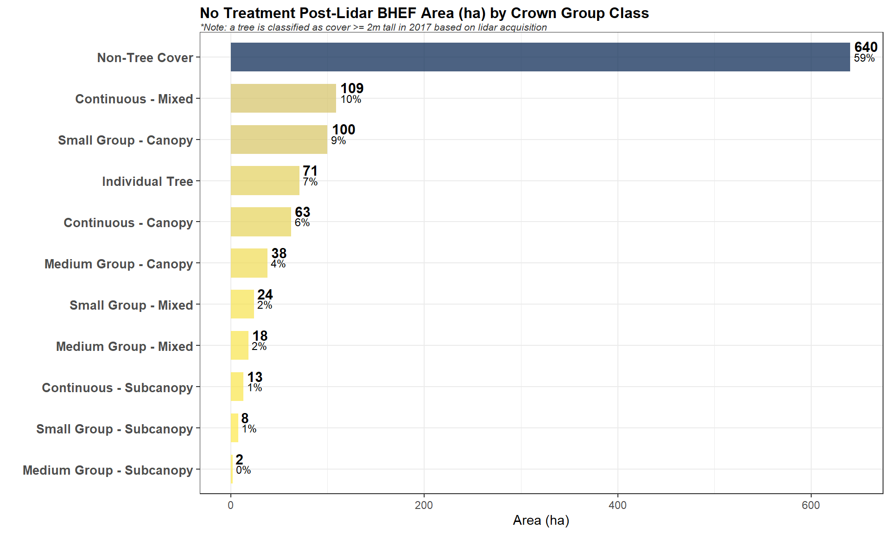
# save plot
ggplot2::ggsave(
filename = paste0("../data/pdf/03cover_class_bhef_noharv.pdf")
, plot = ggplot2::last_plot()
, width = 11
, height = 8.5
, units = "in"
, dpi = "print"
)The total area of the BHEF which has not been treated (i.e. harvest and/or TSI) after the 2017 lidar acquisition is approximately 1,086 hectares (2,683 acres).
5.7 Spatial Arrangement by Crown Group Class
# function to map for each cover class
my_full_area_map <- function(my_class,my_data){
#generate title
my_title <- paste0(my_class)
my_caption <- paste0(
scales::percent(
(crowns_group_area_sum %>% dplyr::filter(crown_group_class==my_class))$pct_area
, accuracy = 1
)
, " of total BHEF Area"
)
#plot
(
ggplot() +
geom_sf(data = bhef_boundary, alpha = 0, lwd = 1, color = "black", linetype = "dashed") +
geom_sf(data = rx_fire, alpha = 0, lwd = 1, color = "orangered") +
geom_sf(data = my_data %>%
dplyr::filter(crown_group_class==my_class)
, fill = (col_data %>% dplyr::filter(crown_group_class==my_class))$crown_group_class_color
, lwd = NA
) +
geom_sf_label(data = rx_fire, aes(label = unit)
, label.size = NA
, alpha = 0
, size = 2
) +
coord_sf(expand = F) +
labs(
title = my_title
, subtitle = "Spatial Arrangement on BHEF"
, caption = my_caption
, x = ""
, y = ""
) +
scale_x_continuous(expand = c(0, 0)) +
scale_y_continuous(expand = c(0, 0)) +
theme_bw() +
theme(
legend.position = "none"
, legend.direction = "horizontal"
, legend.title = element_blank()
, axis.text = element_text(size = 7)
, panel.border = element_blank()
, plot.title = element_text(size = 12, face = "bold", margin = margin(0,0,2,0))
, plot.subtitle = element_text(size=10, color="gray20", margin = margin(0,0,0,0))
, plot.caption = element_text(size=10, face="bold.italic")
)
)
}
sort(unique(crowns_group$crown_group_class)) %>%
purrr::map(my_full_area_map, my_data = crowns_group %>% sf::st_intersection(bhef_boundary))## [[1]]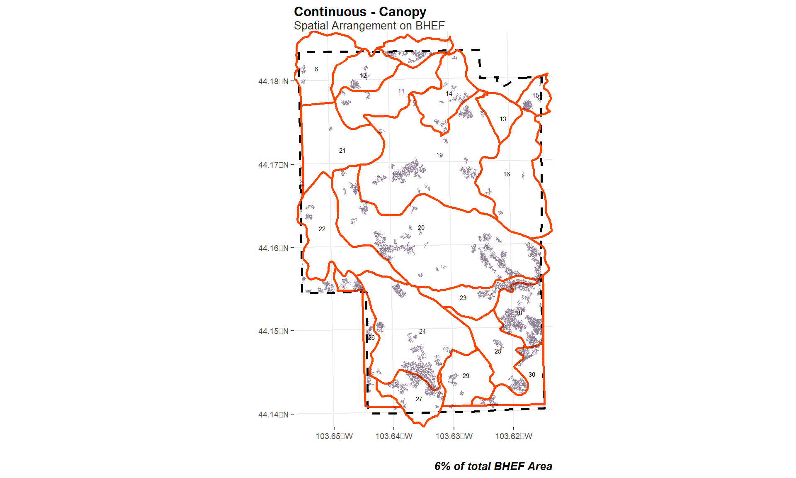
##
## [[2]]##
## [[3]]##
## [[4]]
##
## [[5]]##
## [[6]]##
## [[7]]##
## [[8]]
##
## [[9]]##
## [[10]]5.8 Rx Fire Unit Summary
# summarize area by coverage type
temp_rx_crown <- rx_fire %>%
dplyr::select(unit) %>%
sf::st_difference(
sf::st_union(harvests_post_lidar)
) %>%
sf::st_intersection(
crowns_group %>% dplyr::select(crown_group_class)
) %>%
dplyr::mutate(area_m2 = as.numeric(sf::st_area(.))) %>%
sf::st_set_geometry(NULL) %>%
dplyr::group_by(unit, crown_group_class) %>%
dplyr::summarise(area_m2 = sum(area_m2)) %>%
dplyr::ungroup() %>%
dplyr::select(unit, crown_group_class, area_m2)
# join to base rx fire data
rx_crown_sum <- rx_fire %>%
sf::st_set_geometry(NULL) %>%
dplyr::select(unit, postlidar_harvest_area_m2) %>%
dplyr::rename(area_m2 = postlidar_harvest_area_m2) %>%
dplyr::mutate(crown_group_class = "Post-Lidar Treatment") %>%
dplyr::relocate(names(temp_rx_crown)) %>%
dplyr::bind_rows(temp_rx_crown) %>%
dplyr::left_join(
rx_fire %>%
sf::st_set_geometry(NULL) %>%
dplyr::select(unit, area_m2) %>%
dplyr::rename(total_area_m2 = area_m2)
, by = c("unit" = "unit")
)
# find non-tree cover
rx_crown_sum <- rx_crown_sum %>%
dplyr::bind_rows(
# find left over area
rx_crown_sum %>%
dplyr::group_by(unit) %>%
dplyr::summarise(cov_area_m2 = sum(area_m2), total_area_m2 = max(total_area_m2)) %>%
dplyr::ungroup() %>%
dplyr::mutate(
area_m2 = total_area_m2 - cov_area_m2
, crown_group_class = "Non-Tree Cover"
) %>%
dplyr::select(names(rx_crown_sum)) %>%
dplyr::relocate(names(rx_crown_sum))
) %>%
dplyr::mutate(
pct_area = area_m2/total_area_m2
, area_ha = area_m2/10000
) %>%
dplyr::arrange(unit, crown_group_class) %>%
dplyr::left_join(col_data, by = c("crown_group_class" = "crown_group_class"))
# summarize for plot
rx_crown_sum %>%
dplyr::mutate(
cover = dplyr::case_when(
crown_group_class %in% c("Non-Tree Cover", "Post-Lidar Treatment") ~ crown_group_class
, startsWith(crown_group_class, "Continuous") ~ "Continuous Tree Cover"
, TRUE ~ "Sm/Med Grp. & Indiv. Tree Cover"
)
, cover_num = dplyr::case_when(
crown_group_class == "Non-Tree Cover" ~ 4
, crown_group_class == "Post-Lidar Treatment" ~ 3
, startsWith(crown_group_class, "Continuous") ~ 1
, TRUE ~ 2
)
) %>%
dplyr::group_by(unit, cover, cover_num) %>%
dplyr::summarise(
pct_area = sum(pct_area)
, area_m2 = sum(area_m2)
, total_area_ha = max(total_area_m2)/10000
) %>%
dplyr::ungroup() %>%
# plot
ggplot() +
geom_col(aes(
y = reorder(unit, total_area_ha)
, x = pct_area
, fill = reorder(cover, -cover_num)
)
, width = 0.7
) +
scale_fill_viridis_d(option = "cividis", alpha = 1, direction = -1) +
geom_text(
aes(
y = reorder(unit, total_area_ha)
, x = pct_area
, label = scales::percent(
ifelse(pct_area < 0.05, NA, pct_area)
, accuracy = 1)
, group = reorder(cover, -cover_num)
)
, position = position_stack(vjust = 0.5)
, color = "white"
, size = 3
, fontface = "bold"
# , hjust = -0.1
# , vjust = 0.1
) +
geom_text(
aes(
y = reorder(unit, total_area_ha)
, x = 1.06
, label = paste0(scales::comma(
total_area_ha
, accuracy = 1)
, " ha"
)
)
, color = "black"
, size = 4
, fontface = "bold"
) +
labs(
title = "Cover Classification of Rx Fire Unit Area"
, subtitle = "*Note: a tree is classified as cover >= 2m tall in 2017 based on lidar acquisition"
) +
xlab("% of Area") +
ylab("Rx Fire Unit") +
scale_x_continuous(labels = scales::percent) +
theme_bw() +
theme(
plot.title = element_text(size = 12, face = "bold", margin = margin(0,0,2,0))
, plot.subtitle = element_text(size=8, face="italic", color="gray20", margin = margin(0,0,0,0))
, axis.text.y = element_text(size = 10, face = "bold")
, legend.title = element_blank()
)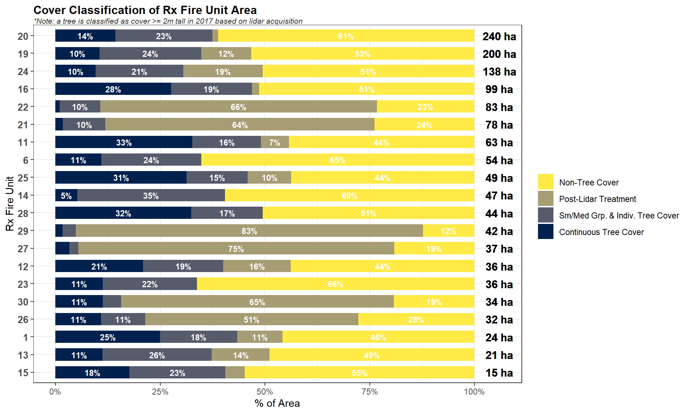
# save plot
ggplot2::ggsave(
filename = paste0("../data/pdf/04cover_class_by_unit.pdf")
, plot = ggplot2::last_plot()
, width = 11
, height = 8.5
, units = "in"
, dpi = "print"
)5.8.1 Rx Fire Unit Cover Class
Create a plot function for cover class by fire unit.
plot_cover_class_bars <- function(my_unit){
(
# plot
ggplot(data = rx_crown_sum %>% dplyr::filter(unit == my_unit)) +
geom_col(
aes(
y = reorder(crown_group_class, desc(crown_group_class))
, x = area_ha
, fill = crown_group_class
)
, width = 0.7
) +
scale_fill_manual(values = scale_fill_manual_values_fill) +
geom_text(
aes(
y = reorder(crown_group_class, desc(crown_group_class))
, x = area_ha
, label = scales::comma(area_ha, accuracy = 1)
)
, color = "black"
, size = 3
, fontface = "bold"
# , position = position_dodge(0.9)
, hjust = -0.1
, vjust = -0.2
) +
geom_text(
aes(
y = reorder(crown_group_class, desc(crown_group_class))
, x = area_ha
, label = scales::percent(pct_area, accuracy = 1)
)
, color = "black"
, size = 2
# , position = position_dodge(0.9)
, hjust = -0.1
, vjust = 0.9
) +
labs(
# title = paste0("Rx Fire Unit: ", my_unit)
subtitle = "Area (ha) by Crown Group Class"
, x = "Area (ha)"
, y = ""
) +
scale_x_continuous(labels = scales::comma, expand = expansion(mult = c(0, 0.1))) +
theme_bw() +
theme(
legend.position = "none"
# , plot.title = element_text(size = 12, face = "bold", margin = margin(0,0,2,0))
, plot.subtitle = element_text(size=8, color="gray20", margin = margin(0,0,0,0))
, axis.text.y = element_text(size = 7, face = "bold")
, axis.text.x = element_text(size = 7)
, axis.title.x = element_text(size = 7)
)
)
}
# print(plot_cover_class_bars(my_unit = rx_fire$unit[8]))5.8.2 Rx Fire Unit Cover Map
plot_cover_class_map <- function(my_unit){
(
#########################################
#########################################
# map of unit w/ canopy
#########################################
#########################################
ggplot() +
stars::geom_stars(
data = naip_rgb[
rx_fire %>% dplyr::filter(unit == my_unit) %>%
sf::st_buffer(dist = 50) %>%
sf::st_transform(crs = sf::st_crs(naip_st)) %>%
sf::st_bbox()
]
) +
scale_fill_identity(na.value = "transparent") + # !!! don't take this out or RGB plot will kill your computer
geom_sf(data = rx_fire %>%
dplyr::filter(unit == my_unit) %>%
sf::st_transform(crs = sf::st_crs(naip_st))
, alpha = 0
, lwd = 1.5
, color = "orangered"
) +
geom_sf(data = crowns_group %>%
sf::st_crop(
rx_fire %>% dplyr::filter(unit == my_unit) %>%
sf::st_buffer(dist = 50) %>%
sf::st_bbox()
) %>%
sf::st_transform(crs = sf::st_crs(naip_st))
, lwd = NA
, aes(fill = crown_group_class_color)
) +
geom_sf(data = harvests_post_lidar %>%
# sf::st_union() %>%
sf::st_crop(
rx_fire %>% dplyr::filter(unit == my_unit) %>%
sf::st_buffer(dist = 50) %>%
sf::st_bbox()
) %>%
sf::st_transform(crs = sf::st_crs(naip_st))
, color = "blue"
, lwd = 1.5
, fill = (col_data %>% dplyr::filter(crown_group_class == "Post-Lidar Treatment"))$crown_group_class_color
# , alpha = 0.4
) +
labs(
title = paste0("Rx Fire Unit: "
, my_unit
, " ("
, scales::comma((rx_fire %>% dplyr::filter(unit == my_unit))$area_ha, accuracy = 1)
, " ha | "
, scales::comma((rx_fire %>% dplyr::filter(unit == my_unit))$area_m2/4047, accuracy = 1)
, " ac)"
)
, subtitle = ifelse(
(rx_fire %>% dplyr::filter(unit == my_unit))$has_postlidar_harvest == 1
, "**This unit has post-lidar treatment (blue boundary)"
, ""
)
) +
xlab("") +
ylab("") +
scale_x_continuous(expand = c(0, 0)) +
scale_y_continuous(expand = c(0, 0)) +
theme_bw() +
theme(
legend.position = "none"
, legend.direction = "horizontal"
, legend.title = element_blank()
, axis.text = element_text(size = 7)
, axis.text.x = element_text(size = 7, angle = 35, hjust = 0.7)
, panel.border = element_blank()
, plot.title = element_text(size = 14, face = "bold", margin = margin(0,0,2,0))
, plot.subtitle = element_text(size=9, face="bold.italic", color="blue", margin = margin(0,0,0,0))
)
)
}
# print(plot_cover_class_map(my_unit = rx_fire$unit[1]))5.8.3 Rx Fire Unit Contour
plot_contour_map <- function(my_unit){
(
#########################################
#########################################
# map of unit w/ contour
#########################################
#########################################
# plot
ggplot() +
geom_raster(
data = bhef_elev %>%
terra::rast() %>%
terra::crop(
rx_fire %>% dplyr::filter(unit == my_unit) %>%
sf::st_buffer(dist = 50) %>%
sf::st_bbox() %>%
sf::st_as_sfc() %>%
terra::vect()
) %>%
as.data.frame(xy=T) %>%
dplyr::rename(elev = 3)
, mapping = aes(x=x,y=y,fill=elev)
) +
# stars::geom_stars(data = bhef_elev[
# rx_fire %>% dplyr::filter(unit == my_unit) %>%
# sf::st_buffer(dist = 50) %>%
# sf::st_bbox()
# ]) +
geom_sf(data = bhef_contour %>%
sf::st_crop(
rx_fire %>% dplyr::filter(unit == my_unit) %>%
sf::st_buffer(dist = 50) %>%
sf::st_bbox()
)
, alpha = 0
, lwd = 0.5
, color = "gray30"
, show.legend = FALSE
) +
geom_sf(data = rx_fire %>%
dplyr::filter(unit == my_unit)
, alpha = 0
, lwd = 1.5
, color = "orangered"
, show.legend = FALSE
) +
scale_fill_viridis_c(
option = "viridis"
, alpha = 0.9
, na.value = "transparent"
, breaks = scales::extended_breaks(n = 6)
, labels = scales::comma
) +
scale_x_continuous(expand = c(0, 0)) +
scale_y_continuous(expand = c(0, 0)) +
labs(
subtitle = paste0("Contour lines are at "
, as.character(contour_int_m)
, "-m (~"
, as.character(round(contour_int_m * 3.281, 1))
, "-ft) intervals"
)
, fill = "Elev. (m)"
, x = ""
, y = ""
) +
theme_bw() +
theme(
legend.position = "bottom"
, legend.direction = "horizontal"
, legend.margin = margin(0,0,0,0)
, legend.box.margin = margin(-21,0,2,0)
, legend.text = element_text(size = 7, angle = 25, hjust = 0.7)
, legend.title = element_text(size = 7)
, axis.text = element_blank()
# , axis.text.y = element_text(size = 7)
# , axis.text.x = element_text(size = 7, angle = 35, hjust = 0.7)
, panel.border = element_blank()
, plot.subtitle = element_text(size=9, face="italic", color="gray20", margin = margin(0,0,0,0))
)
)
}
# print(plot_contour_map(my_unit = rx_fire$unit[1]))5.8.4 Rx Fire Unit Insert
plot_small_map <- function(my_unit){
(
ggplot() +
geom_sf(data = bhef_boundary, alpha = 0, lwd = 1, color = "black", linetype = "dashed") +
geom_sf(data = rx_fire, alpha = 0, lwd = 0.7, color = "orangered") +
geom_sf(
data = rx_fire %>% dplyr::filter(unit == my_unit)
, fill = "black"
, alpha = 0.2
, lwd = 1.5
, color = "orangered3"
) +
geom_sf_label(
data = rx_fire
, aes(label = unit)
, label.size = NA
, alpha = 0
, size = 2.5
) +
xlab("") +
ylab("") +
scale_x_continuous(expand = c(0, 0)) +
scale_y_continuous(expand = c(0, 0)) +
theme_bw() +
theme(
axis.text = element_text(size = 5.5)
, axis.text.x = element_text(angle = 35)
, panel.border = element_blank()
)
)
}
# print(plot_small_map(my_unit = rx_fire$unit[11]))5.9 Rx Fire Info Sheets
Create info sheets for each Rx Fire unit.
# # set up plot legend once
# p_legend <-
# ggplot(col_data) +
# geom_col(
# aes(
# x = row_n
# , y = 1
# , fill = crown_group_class
# )
# ) +
# scale_fill_manual(values = scale_fill_manual_values_fill) +
# geom_text(
# aes(
# x = row_n
# , y = 0.5
# , label = crown_group_class
# )
# , size = 2.5
# , fontface = "bold"
# , angle = 90
# , color = "black"
# ) +
# theme_nothing()
# loop through all units to create pdf export
for (i in 1:nrow(rx_fire)) {
# for (i in c(1,3)) {
# plots
p_class_map <- plot_cover_class_map(my_unit = rx_fire$unit[i])
p_class_bars <- plot_cover_class_bars(my_unit = rx_fire$unit[i])
p_contour_map <- plot_contour_map(my_unit = rx_fire$unit[i])
p_small_map <- plot_small_map(my_unit = rx_fire$unit[i])
# arrange plots on one page
info_sht <-
print(
ggpubr::ggarrange(
p_class_map
, ggpubr::ggarrange(
p_small_map
, p_contour_map
, p_class_bars
, nrow = 1
, ncol = 3
, widths = c(0.5, 1.2, 1)
)
, nrow = 2
, ncol = 1
, heights = c(1.7, 1)
# , align = "hv"
)
)
# export pdf
ggplot2::ggsave(
filename = paste0("../data/pdf/unit", sprintf("%02d", as.numeric(rx_fire$unit[i])),".pdf")
, plot = info_sht
, width = 11
, height = 8.5
, units = "in"
, dpi = "print"
)
}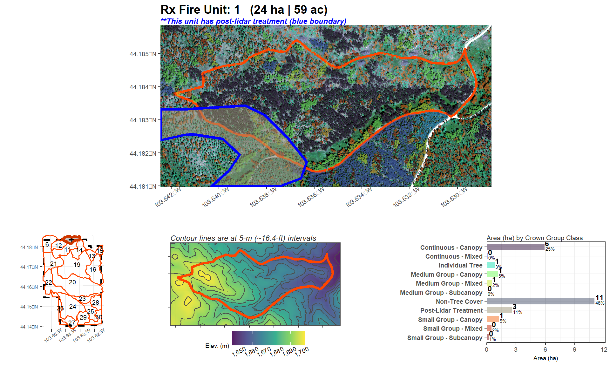 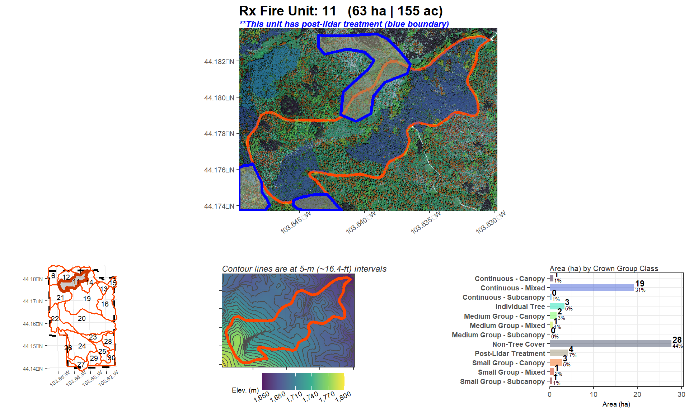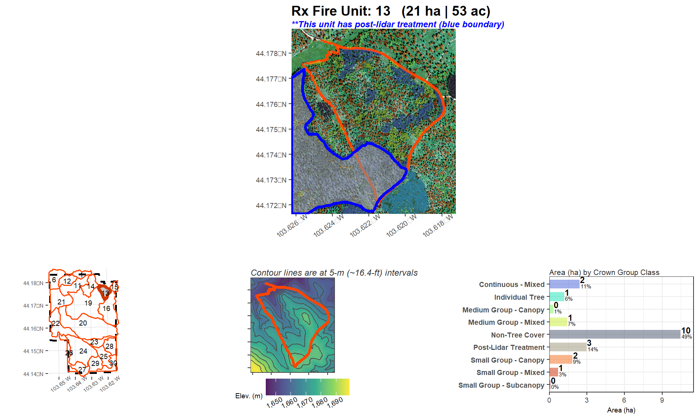
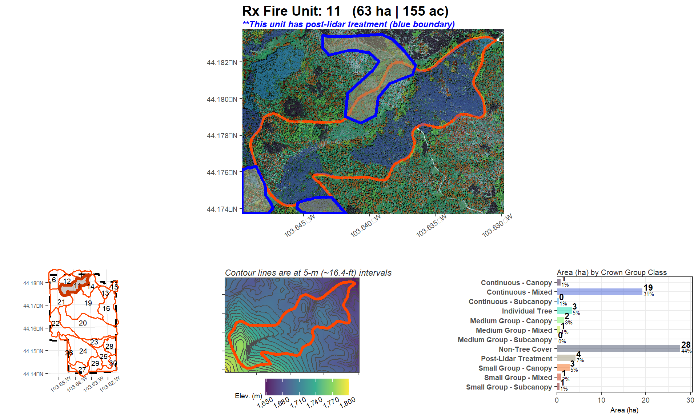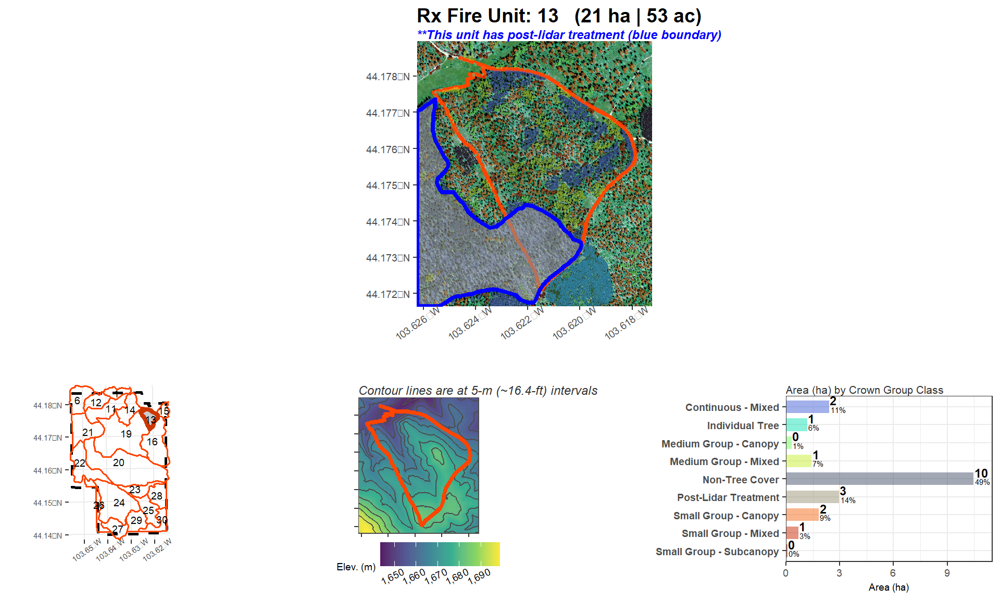 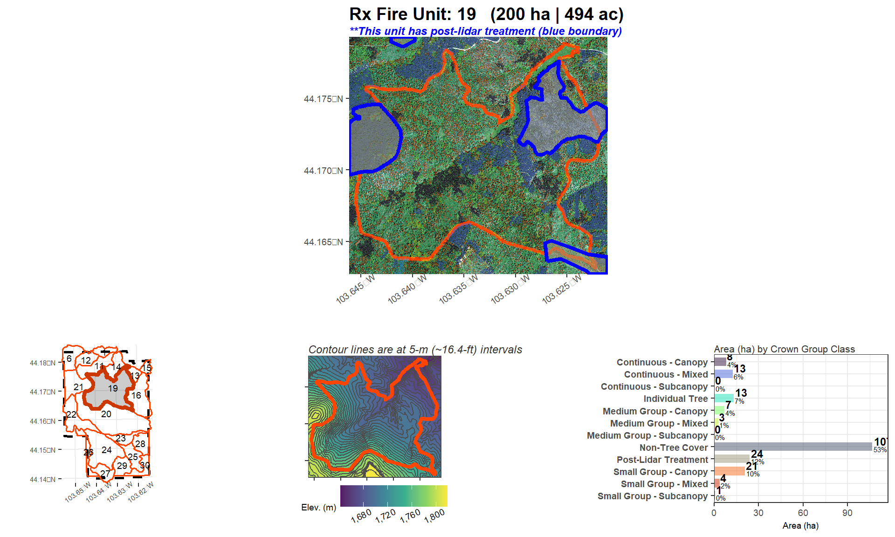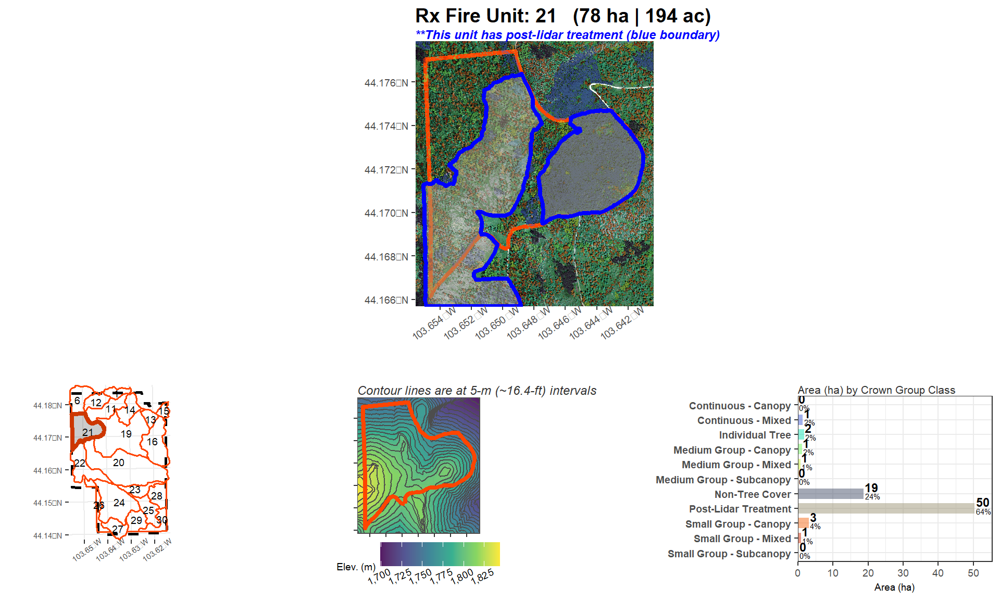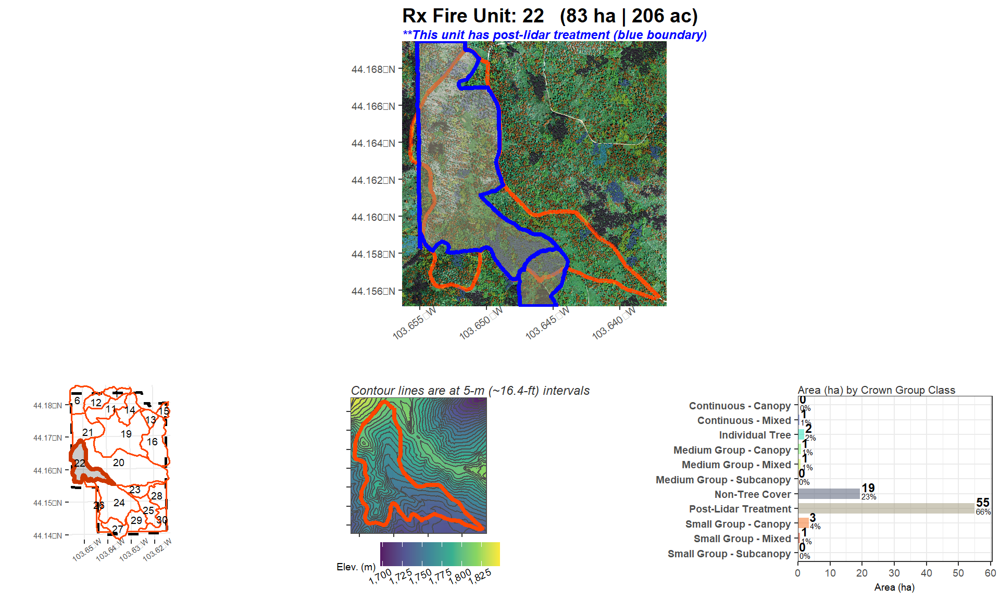
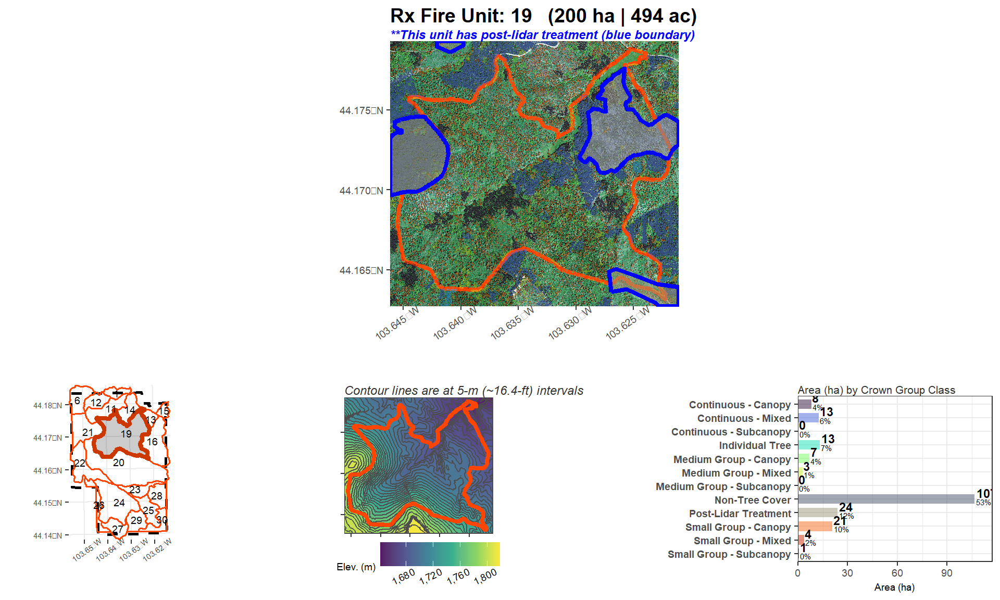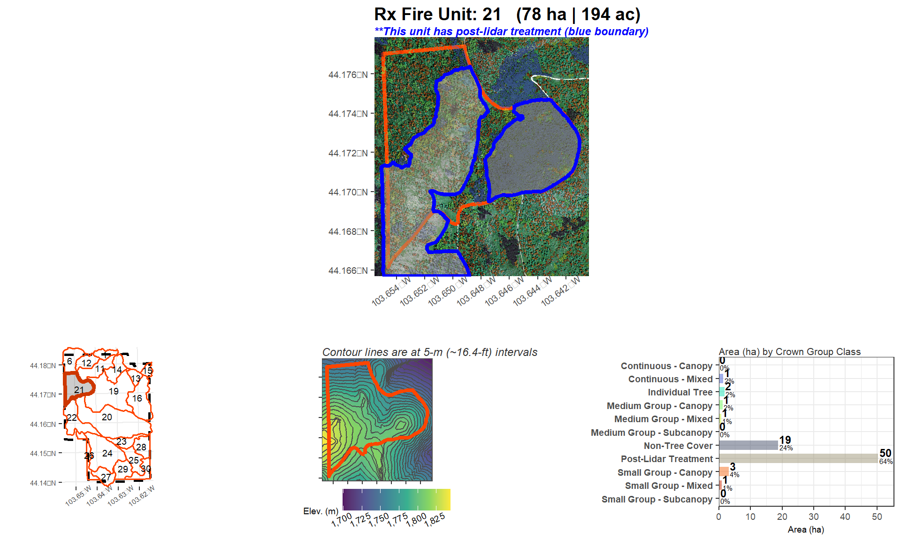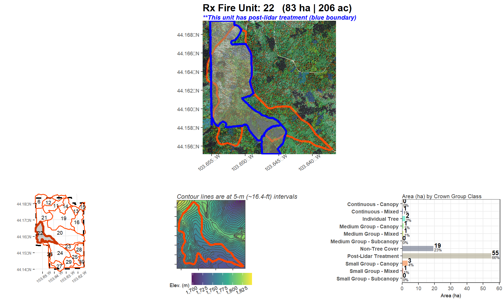 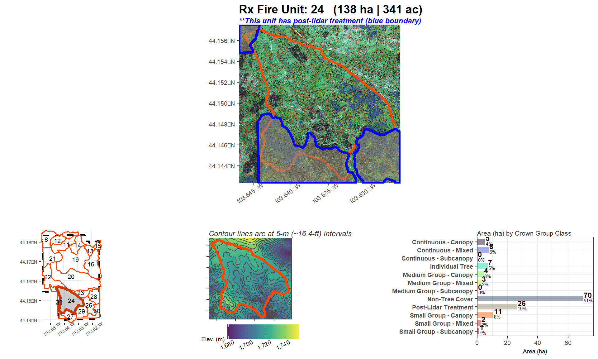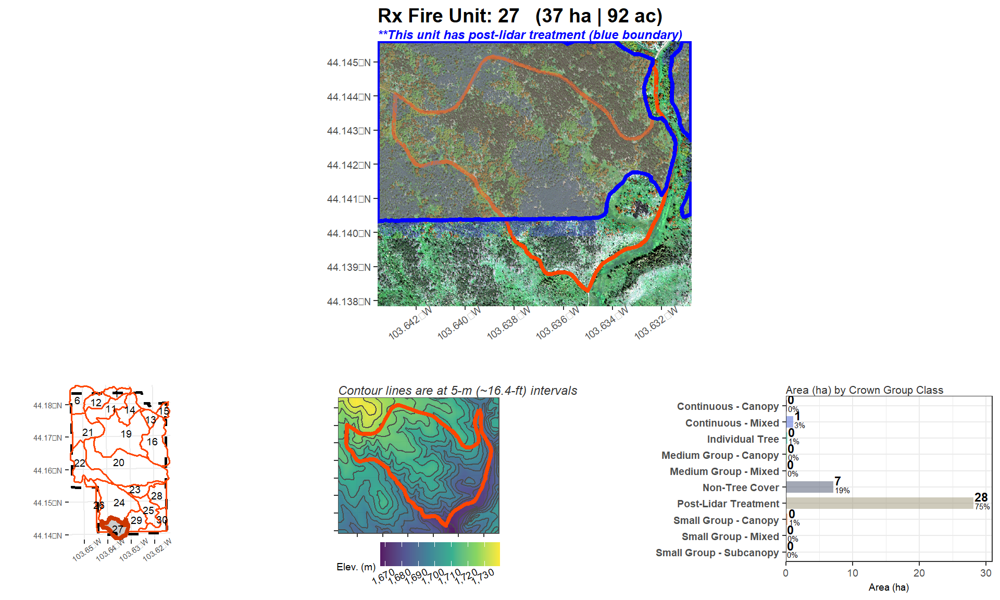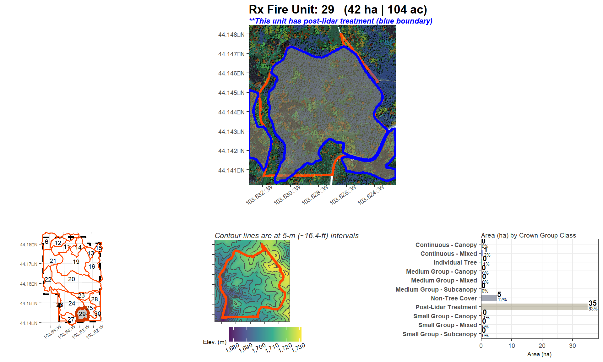
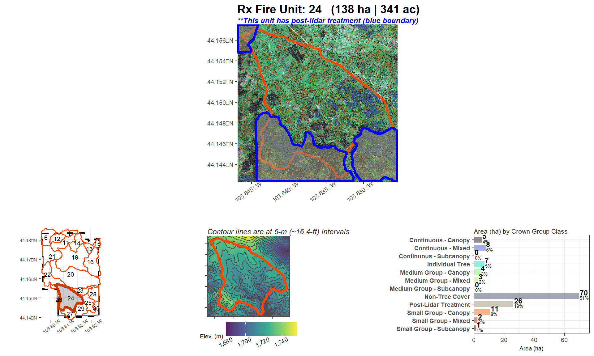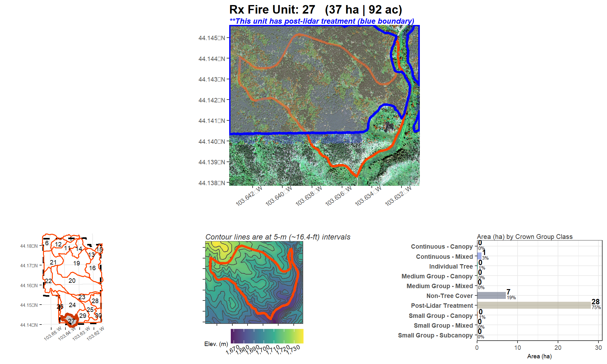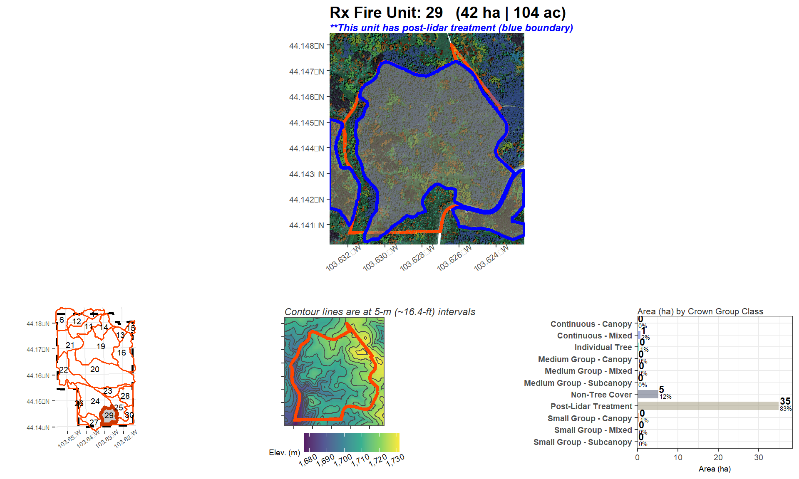
5.10 Rx Fire Info Packet
Combine info sheets for each Rx Fire unit into full packet for printing.
# combine all pdfs together
pdfs <- sort(list.files("../data/pdf", pattern = "\\.pdf$", full.names = TRUE))
# combine with pdftools
pdftools::pdf_combine(
pdfs
, output = paste0(
"../data/pdf/"
, "BHEF_RxFire_Plan_"
, gsub("-", "", Sys.Date())
, ".pdf"
)
)## [1] "C:\\Data\\usfs\\bhef_rxfire_plan\\data\\pdf\\BHEF_RxFire_Plan_20230602.pdf"